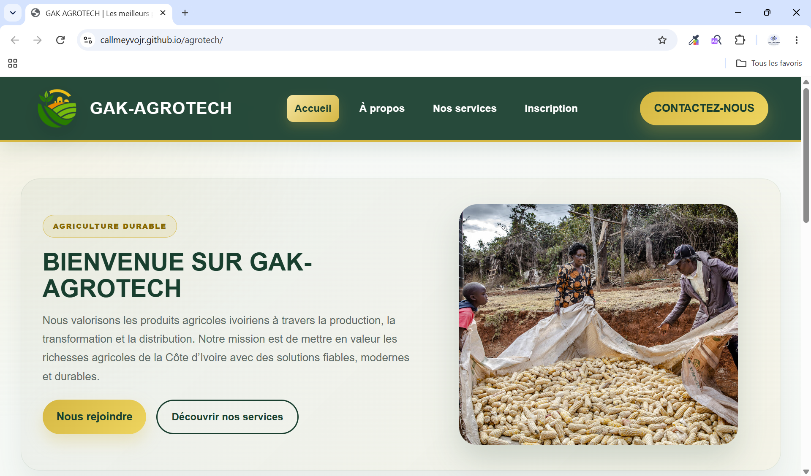

GAK AGROTECH Ajoute assets/images/agrotech.png PROJET 01SITE WEB · AGRICULTURE
GAK AGROTECH · Agrotech
Une plateforme agricole virtuelle dédiée à la valorisation des produits agricoles ivoiriens à travers la production, la transformation et la distribution. Ce projet me permet de mettre en pratique mes connaissances en développement web.